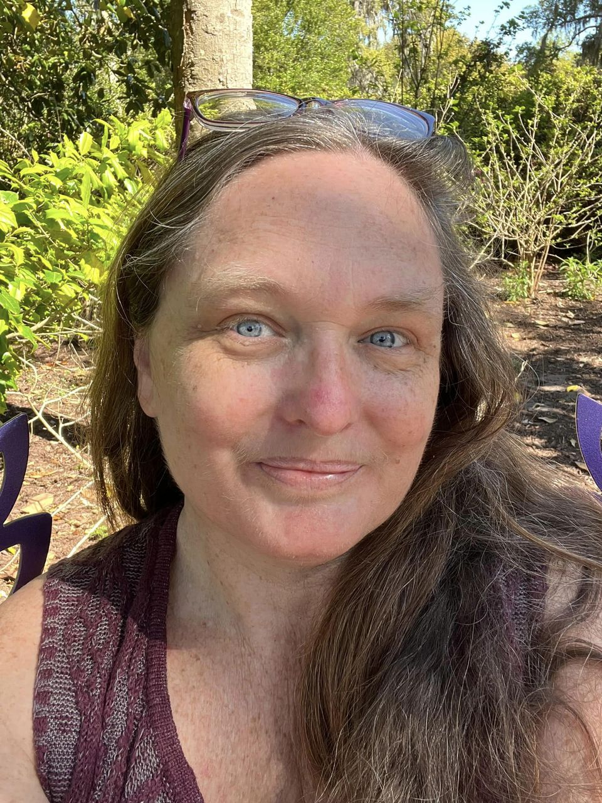
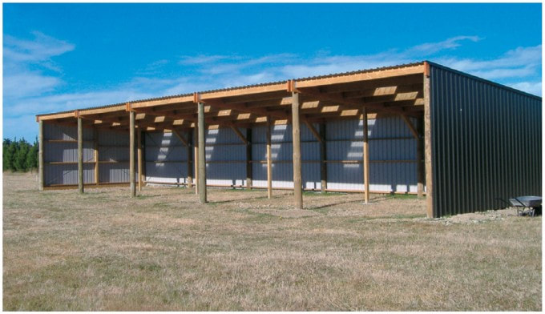

A legacy farm becoming a sustainable agricultural enterprise, event venue, and community gathering place in Castle Hayne, NC.
Weddings, barn dances, corporate retreats, and celebrations on 26 riverside acres.
Fund the build-out and earn perks — from camping stays to naming rights on barns.
Trade your skills for a free stay. We match your strengths to real farm work you'll enjoy.
Get farm updates, event announcements, and seasonal news in your inbox.
Hi, I'm Jane Lewis — matriarch of a 26-acre legacy farm on the Northeast Cape Fear River in New Hanover County, NC. I've balanced education, agriculture, and full-time motherhood most of my life, with the enthusiastic help of my dashingly handsome, talented, and hard-working husband, David Tucker Hill.
Our goal is to transform this family land into a modest, sustainable agricultural enterprise with room for special events: musical gatherings, art festivals, traditional dance, food and wine galas, and so much more.
We're building this one season at a time — and we'd love you to be part of it.


Our inaugural growing season centers on a small peach orchard, a loblolly pine mushroom stand, and a seasonal watermelon grove — all guided by NC State Agriculture Extension research and sustainable soil practices.

We're also building two new sheds, an outdoor stage, a camping and event space, and finishing a converted Tobacco Barn guest house — the bones of what will become one of the Cape Fear region's most distinctive event venues.
We envision large tented outdoor parties, barn dances, corporate retreats, celebratory dinners, music festivals, and intimate riverside ceremonies. Three event stages. Covered barns. Vineyard trellises. River views.
We're currently booking for the 2026 inaugural season and shaping our facilities around the events you most want to host. Reach out early — we'll customize the setting around your vision.


Farm updates, event dates, and seasonal news — in your inbox.